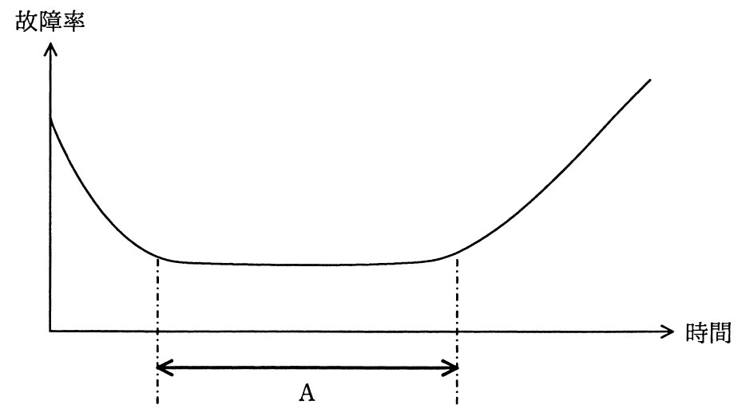

故障率曲線において，図中のAの期間に実施すべきことはどれか。

ア 設計段階では予想できなかった設計ミス，生産工程では発見できなかった欠陥などによって故障が発生するので，出荷前に試運転を行う。
イ 対象の機器・部品が，様々な環境条件の下で使用されているうちに，偶発的に故障が発生するので，予備部品などを用意しておく。
ウ 疲労・摩耗・劣化などの原因によって故障が発生するので，部品交換などの保全作業を行い，故障率を下げる。
エ 摩耗故障が多く発生してくるので，定期的に適切な保守を行うことによって事故を未然に防止する。